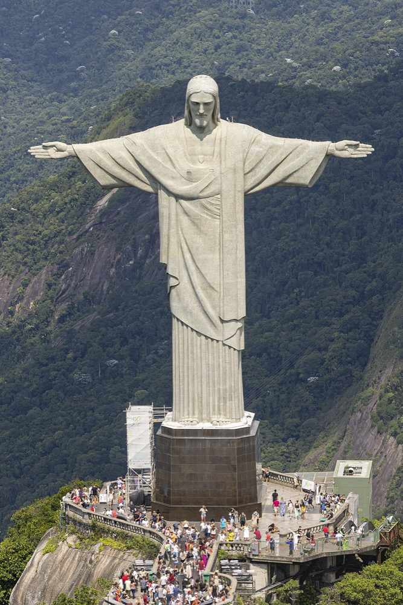

Бразилия

Бразилия — континент размером с привычку неспешного разговора. Рио: Копакабана, Сахарная голова на канатке к закату, Христос с горы Корковадо, который смотрит на город так, будто следит за счётом — и вечерние пляжи с футболом в четыре ворот. Самба здесь не жанр, а температура; в Лапе — бары с живыми оркестрами до утра. Амазония заслуживает второго дня, а Игуасу — все 275 водопадов в радиусе километра, «Глотка дьявола» с площадки, где вода работает как оркестр; бразильская сторона даёт панораму, аргентинская — близость; берите обе. Амазония: лодка по Рио-Негро, кайманы ночью с фонариком, розовые дельфины, лес, который дышит громче города. Салвадор — афро-бразильский пульс, капоэйра на террасах и жареные акраже с креветками. Кухня — пиканья на гриле, açaí со свежего рынка, кайпиринья со щедрым льдом. здесь говорят с ритмом, и вы поймёте больше, чем ожидали.
Что знать перед поездкой
- Сахарная голова — на закат, до очередей
- Игуасу — обе стороны границы
- Кайпиринья — с щедрым льдом